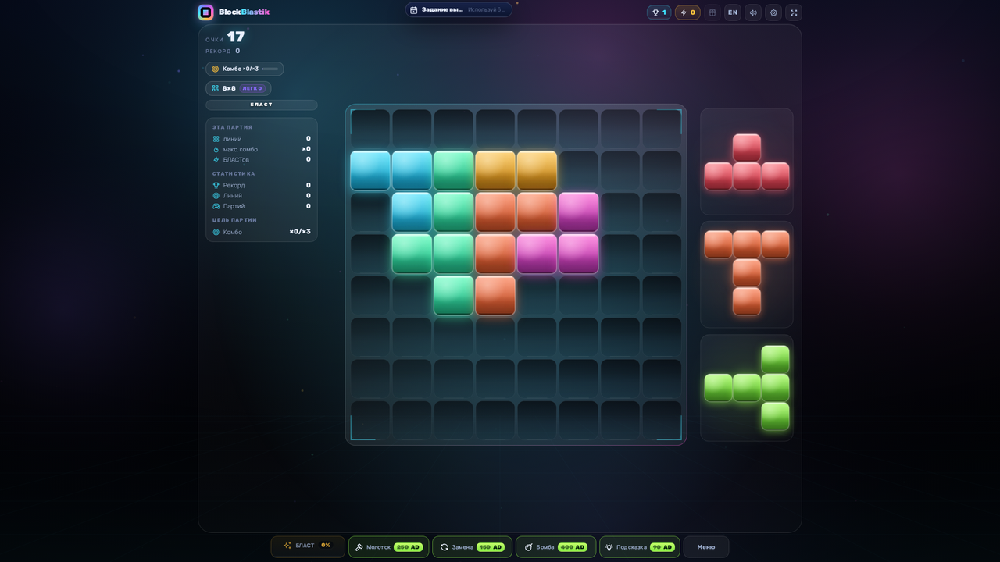
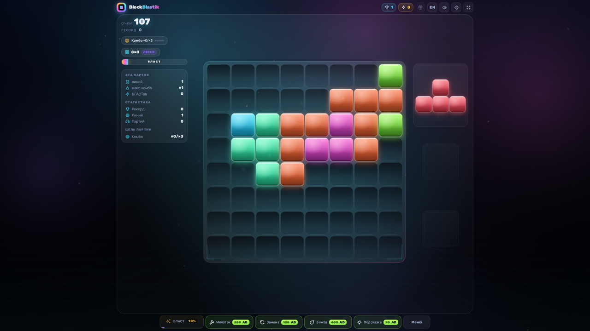

Block Blastik: Блоки в ряд
Блок-пазл: ставь фигуры на поле 8×8, собирай полные ряды и столбцы — они взрываются. Комбо, шкала БЛАСТ, спринт, ежедневка, скины и рейтинг.
Играть прямо сейчас



Об игре
Ставь фигуры, собирай линии и лови комбо-множители. Заполненный ряд или столбец взрывается, а серия линий заряжает шкалу БЛАСТ — она даёт бонусные очки и усиления. Режимы: классика, спринт и ежедневная головоломка. Есть скины, задания, колесо наград и серия входов.
Что внутри
- Управление одним пальцем — тяни и отпускай
- Комбо-цепочки и бонусы за точные слияния
- Квесты, задание дня и дзен-режим
- Уровни, монеты и достижения
- Рекорды сохраняются на устройстве
Где играть
- На этом сайте: Block Blastik: Блоки в ряд в браузере
- ВКонтакте / VK Игры — запуск из интерфейса VK
- Яндекс Игры — без установки, с прогрессом аккаунта
- RuStore и Google Play — мобильные версии (Android)
Частые вопросы
Нужно ли скачивать? Нет: игра открывается в браузере на телефоне и компьютере.
Нужен ли аккаунт? Нет. Прогресс сохраняется на устройстве, а на площадках (VK, Яндекс) — в аккаунте.
Игра платная? Бесплатная. Внутри есть реклама и покупки — они ускоряют прогресс, но не обязательны.